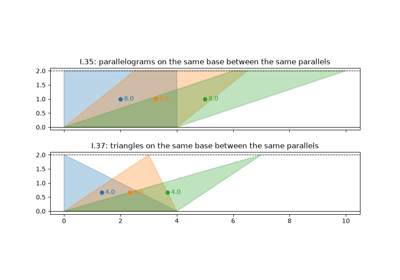
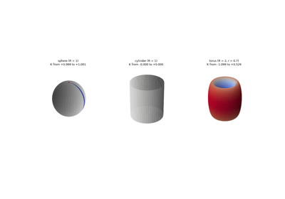
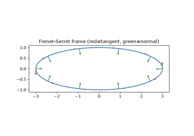
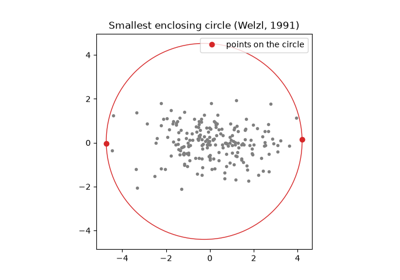
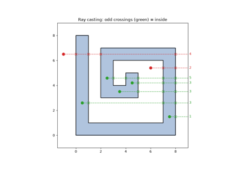
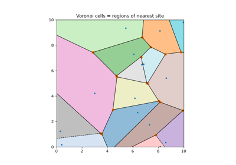
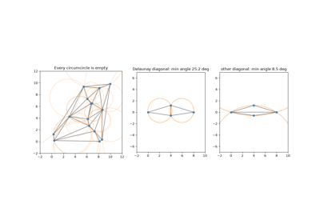
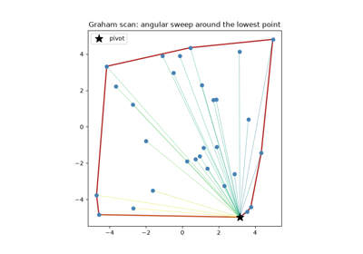
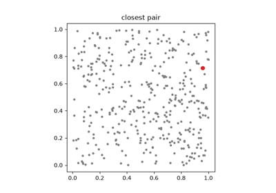

Breakthroughs in Computational Geometry#
“There is no royal road to geometry.” – Euclid, reportedly to Ptolemy I, as recorded by Proclus in his 5th-century commentary on the Elements
Geometry is arguably the oldest rigorously axiomatized subject in
mathematics, yet computational geometry – how to compute a convex
hull, a triangulation, or a curve’s curvature efficiently and correctly
in finite-precision arithmetic – has existed as a named discipline for
only about fifty years. This chronology traces the ideas behind
mathematicskit.geometry, from Euclid’s axioms to the algorithms
that now underlie computer-graphics pipelines and geographic
information systems.
c. 300 BCE – Euclid’s Elements#
Euclid’s Elements organized geometry as a deductive system. From a small set of postulates and common notions it derived hundreds of theorems by logical inference alone, setting the template for axiomatic mathematics as a whole. The compass-and-straightedge constructions of Book I are themselves a kind of algorithm, and the book’s theory of area (Propositions 35-45) is the ancestor of the polygon-area computations in this domain. The shoelace formula those computations use came much later: Albrecht Ludwig Friedrich Meister gave it in 1769, and Carl Friedrich Gauss in 1795.
Implementation: mathematicskit.geometry.systems.polygon.polygon_area()
and polygon_centroid()
compute a polygon’s area and centroid with the shoelace formula.
References: Euclid, Elements (c. 300 BCE), Book I, as translated in T. L. Heath, The Thirteen Books of Euclid’s Elements, 2nd ed. (Cambridge: Cambridge University Press, 1926).

Euclid’s Elements, Book I: equal areas between parallels
c. 60 CE – Heron’s Formula#
Heron of Alexandria’s Metrica gives the area of a triangle from its three sides alone, with no need for a height:
The Arabic scholar al-Biruni credited the result to Archimedes, but Heron’s proof is the oldest that survives. The formula has a modern numerical twist. For a thin, needle-like triangle, \(s\) is almost equal to the longest side, and subtracting nearly equal numbers destroys most of the digits. William Kahan showed that sorting the sides and regrouping the factors makes the formula accurate for every triangle.
Implementation: mathematicskit.geometry.systems.polygon.heron_area()
evaluates Kahan’s stable arrangement. The tests compare it with the
shoelace formula on random triangles and check a needle triangle where
the textbook form fails.
References: Heron of Alexandria, Metrica, Book I, Proposition 8, discussed in T. L. Heath, A History of Greek Mathematics, vol. 2 (Oxford: Clarendon Press, 1921); W. Kahan, “Miscalculating Area and Angles of a Needle-like Triangle” (lecture notes, University of California, Berkeley, 2014).
1750-1758 – Euler’s Polyhedron Formula#
In a 1750 letter to Christian Goldbach, Leonhard Euler observed that every convex polyhedron with \(V\) vertices, \(E\) edges, and \(F\) faces satisfies
and he published the formula, with an attempted proof, in 1758. The cube has \(8 - 12 + 6 = 2\), the icosahedron \(12 - 30 + 20 = 2\). Adrien-Marie Legendre gave the first complete proof in 1794. The number \(V - E + F\) depends only on the shape’s topology, not its geometry: a polyhedron with a hole through it gives 0 instead of 2. It was the first topological invariant, later generalized as the Euler characteristic.
Implementation: mathematicskit.geometry.systems.polyhedra.polyhedron_counts()
takes the convex hull of 3D points with scipy.spatial.ConvexHull,
merges its coplanar triangles back into true faces, and returns the
counts. The tests verify all five Platonic solids and random hulls.
References: L. Euler, “Elementa doctrinae solidorum,” Novi Commentarii Academiae Scientiarum Petropolitanae 4 (1758), 109-140; D. S. Richeson, Euler’s Gem: The Polyhedron Formula and the Birth of Topology (Princeton: Princeton University Press, 2008).
1827 – Gauss’s Theorema Egregium#
Carl Friedrich Gauss’s 1827 memoir on curved surfaces defined the curvature \(K\) of a surface at a point as the product of its two principal curvatures. His “remarkable theorem” shows that \(K\) can be computed from lengths and angles measured within the surface alone, without reference to the surrounding space. A cylinder is bent in space yet has \(K = 0\), because it unrolls flat without stretching. A sphere has \(K = 1/R^2\), so no map of the Earth can preserve all distances. Pierre Ossian Bonnet extended the theory in 1848: the total curvature \(\int K\,dA\) of a closed surface is \(4\pi\) for a sphere and 0 for a torus, whatever their exact shape.
Implementation: mathematicskit.geometry.systems.surfaces.surface_curvature()
computes the Gaussian and mean curvature of a parametric surface from
its first and second fundamental forms, and
sphere_surface(),
cylinder_surface(), and
torus_surface() supply
test surfaces. The tests check the closed-form curvatures and the
Gauss-Bonnet totals.
References: C. F. Gauss, “Disquisitiones generales circa superficies curvas,” Commentationes Societatis Regiae Scientiarum Gottingensis Recentiores 6 (1828), 99-146; O. Bonnet, “Mémoire sur la théorie générale des surfaces,” Journal de l’École Polytechnique 19 (1848), 1-146.

Gauss’s Theorema Egregium: curvature you can measure from inside
1847-1851 – Frenet, Serret, and the Moving Frame#
Jean Frédéric Frenet’s 1847 thesis and Joseph Alfred Serret’s 1851 paper independently derived the equations for a moving orthonormal frame (tangent, normal, and binormal vectors) attached to a curve in space. They also identified the two scalar quantities that determine the curve’s shape up to rigid motion. Curvature measures how sharply the curve bends within its osculating plane; torsion measures how quickly that plane twists, pulling the curve out of a flat shape.
Implementation: mathematicskit.geometry.systems.curves.frenet_serret_frame()
computes this frame and both scalar invariants. It takes derivatives
with numpy.gradient() and arc length with
scipy.integrate.cumulative_trapezoid(), and is checked against the
closed-form constant curvature and torsion of a circular helix.
References: J. F. Frenet, “Sur les courbes à double courbure” (Ph.D. thesis, Université de Toulouse, 1847), condensed in Journal de Mathématiques Pures et Appliquées 17 (1852), 437-447; J. A. Serret, “Sur quelques formules relatives à la théorie des courbes à double courbure,” Journal de Mathématiques Pures et Appliquées 16 (1851), 193-207.

The Frenet-Serret frame of a circular helix
1857-1991 – Sylvester, Welzl, and the Smallest Enclosing Circle#
James Joseph Sylvester asked in 1857 for the smallest circle that contains a given set of points in the plane. The optimal circle is unique and is determined by two points on a diameter or by three points on its circumference. Checking every pair and triple works but is slow. Nimrod Megiddo gave a deterministic linear-time algorithm in 1983, and Emo Welzl’s 1991 randomized algorithm made the problem easy to solve in expected linear time. It processes the points in random order, and whenever a point falls outside the current circle, it restarts with that point fixed on the boundary. The problem appears in facility location, where it places a service point to minimize the largest distance to any customer.
Implementation: mathematicskit.geometry.systems.enclosing.min_enclosing_circle()
implements Welzl’s algorithm in its iterative, move-to-front form. The
tests check that every point is enclosed, that at least two lie on the
circle, and that the result does not depend on the random order.
References: J. J. Sylvester, “A Question in the Geometry of Situation,” Quarterly Journal of Pure and Applied Mathematics 1 (1857), 79; E. Welzl, “Smallest Enclosing Disks (Balls and Ellipsoids),” in New Results and New Trends in Computer Science, Lecture Notes in Computer Science 555 (Berlin: Springer, 1991), 359-370.

Sylvester’s problem: the smallest enclosing circle
1887-1962 – Point-in-Polygon and the Jordan Curve Theorem#
Camille Jordan’s 1887 theorem states that any simple closed curve in the plane divides it into exactly two regions, an inside and an outside. It sounds obvious but is hard to prove. Jordan’s own proof was long considered incomplete, and Oswald Veblen’s 1905 proof is usually credited as the first fully rigorous one. The ray-casting test for whether a point lies inside a polygon follows directly from the theorem: count how many times a ray from the point crosses the polygon’s boundary, and an odd count means inside. Moshe Shimrat published it as a computer algorithm in 1962.
Implementation: mathematicskit.geometry.systems.intersections.point_in_polygon()
implements this ray-casting test, and this domain’s tests check it on a
concave, L-shaped polygon.
segment_intersection()
implements the companion segment-intersection primitive by applying
Cramer’s rule to the two segments’ parametric equations.
References: C. Jordan, Cours d’analyse de l’École polytechnique, vol. 3 (Paris: Gauthier-Villars, 1887); O. Veblen, “Theory on Plane Curves in Non-Metrical Analysis Situs,” Transactions of the American Mathematical Society 6(1) (1905), 83-98; M. Shimrat, “Algorithm 112: Position of Point Relative to Polygon,” Communications of the ACM 5(8) (1962), 434.

The Jordan curve theorem and ray casting: inside or outside?
1899 – Pick’s Theorem#
Georg Pick proved in 1899 that the area of a polygon whose vertices are lattice points can be found by counting:
where \(I\) is the number of lattice points inside the polygon and \(B\) the number on its boundary. The formula holds for any simple lattice polygon, convex or not. It went largely unnoticed until Hugo Steinhaus included it in his 1969 book Mathematical Snapshots. The theorem fails in three dimensions, where John Reeve’s tetrahedra of arbitrarily large volume contain no lattice points besides their vertices.
Implementation: mathematicskit.geometry.systems.polygon.lattice_point_counts()
counts boundary points with greatest common divisors and interior
points with
point_in_polygon(),
and returns both sides of Pick’s formula. The tests include a
non-convex polygon.
References: G. Pick, “Geometrisches zur Zahlenlehre,” Sitzungsberichte des deutschen naturwissenschaftlich-medicinischen Vereines für Böhmen “Lotos” in Prag 19 (1899), 311-319.
1905-1914 – Pompeiu, Hausdorff, and the Distance Between Shapes#
How far apart are two shapes? The distance between their closest points is useless, since it is zero whenever they touch. Dimitrie Pompeiu’s 1905 thesis and Felix Hausdorff’s 1914 Grundzüge der Mengenlehre proposed instead the smallest \(r\) such that each set lies within distance \(r\) of the other:
It is zero only when the closed sets coincide, and it makes the collection of compact sets into a metric space. The Hausdorff distance is now a standard way to compare shapes in computer vision, to measure how well a polygon approximates a curve, and to prove that iterated function systems converge to their fractal attractors.
Implementation: mathematicskit.geometry.systems.distances.hausdorff_distance()
combines the two one-sided distances from
scipy.spatial.distance.directed_hausdorff(). The example measures
inscribed polygons against a circle, where the exact answer is
\(1 - \cos(\pi/n)\).
References: D. Pompeiu, “Sur la continuité des fonctions de variables complexes,” Annales de la Faculté des Sciences de Toulouse, 2nd series, 7(3) (1905), 265-315; F. Hausdorff, Grundzüge der Mengenlehre (Leipzig: Veit, 1914).
1908 – Voronoi Diagrams#
Georgy Voronoi’s 1908 paper partitioned space into regions, one per input point, each containing every location closer to that point than to any other. René Descartes had sketched the idea qualitatively in 1644, to describe how the influence of stars might divide space, and Peter Gustav Lejeune Dirichlet had studied it rigorously in two and three dimensions in 1850. The construction is now used far beyond mathematics, from modeling crystal grain boundaries to drawing service-area maps for a network of facilities.
Implementation: mathematicskit.geometry.systems.triangulation.voronoi_diagram()
computes this partition with scipy.spatial.Voronoi.
References: G. Voronoi, “Nouvelles applications des paramètres continus à la théorie des formes quadratiques. Deuxième mémoire: Recherches sur les parallélloèdres primitifs,” Journal für die reine und angewandte Mathematik 134 (1908), 198-287.

Voronoi diagrams: every location goes to its nearest site
1934 – Delaunay Triangulation#
Boris Delaunay’s 1934 paper, building on Georgy Voronoi’s 1908 diagrams (above), defined the triangulation of a point set in which no point lies inside any triangle’s circumcircle. In the plane this is equivalent to maximizing the smallest angle over all possible triangulations. Delaunay triangulations therefore avoid the thin, needle-like triangles that cause numerical trouble in interpolation and finite-element meshing. They are also exactly the dual graph of the corresponding Voronoi diagram.
Implementation: mathematicskit.geometry.systems.triangulation.delaunay_triangulation()
wraps scipy.spatial.Delaunay (Qhull), and
voronoi_diagram()
wraps scipy.spatial.Voronoi for its dual.
References: B. Delaunay, “Sur la sphère vide,” Bulletin de l’Académie des Sciences de l’URSS, Classe des Sciences Mathématiques et Naturelles 6 (1934), 793-800.

Delaunay triangulation: empty circumcircles and fat triangles
1959-1962 – De Casteljau, Bézier, and Curves for Car Bodies#
Car designers in the 1950s needed to describe smooth body panels precisely enough for computer-controlled machining. Paul de Casteljau at Citroën in 1959, and Pierre Bézier at Renault from 1962, independently arrived at curves shaped by a few control points. De Casteljau’s algorithm evaluates such a curve by repeated linear interpolation: blend each pair of neighbouring control points in the ratio \(t : 1-t\), and repeat until one point remains. The curve passes through the first and last control points, stays inside the convex hull of all of them, and follows the control polygon’s shape. Citroën kept de Casteljau’s work secret, so the curves carry Bézier’s name. They are now the basis of fonts, vector graphics, and CAD.
Implementation: mathematicskit.geometry.systems.bezier.de_casteljau()
returns every intermediate level of the construction, and
bezier_curve() evaluates
the curve. The tests check it against the Bernstein-polynomial form.
References: P. Bézier, “Définition numérique des courbes et surfaces I,” Automatisme 11 (1966), 625-632; G. Farin, Curves and Surfaces for CAGD, 5th ed. (San Francisco: Morgan Kaufmann, 2002), Ch. 4-5.
1972 – Graham’s Scan and the Convex Hull#
Ronald Graham’s 1972 paper gave one of the first efficient convex-hull algorithms. Sort the points by polar angle around a fixed pivot, then sweep through them in order, discarding any point that would make the hull-in-progress turn clockwise instead of counterclockwise. The algorithm runs in \(O(n\log n)\) time, dominated by the initial sort. It remains one of the clearest examples of a global geometric structure (the hull) built from a simple, local decision made at each point.
Implementation: mathematicskit.geometry.systems.convex_hull.graham_scan()
implements this angular sweep as a teaching comparison. The primary
API is convex_hull(),
which wraps scipy.spatial.ConvexHull (the Qhull library).
References: R. L. Graham, “An Efficient Algorithm for Determining the Convex Hull of a Finite Planar Set,” Information Processing Letters 1(4) (1972), 132-133.

Graham’s scan: the convex hull by an angular sweep
1972-1973 – Ramer, Douglas, Peucker, and Line Simplification#
Digitized coastlines and rivers contain far more points than a map at a given scale can show. Urs Ramer in 1972, and David Douglas and Thomas Peucker in 1973, independently published the same simplification algorithm. Keep the two endpoints, find the point farthest from the segment joining them, and if it lies farther than a tolerance \(\varepsilon\), keep it and repeat on both halves; otherwise drop all the points in between. The result keeps every sharp feature larger than \(\varepsilon\) and discards the rest, and it remains the standard line-generalization method in cartography and geographic information systems.
Implementation: mathematicskit.geometry.systems.simplification.douglas_peucker()
implements the algorithm with an explicit stack. The tests check that
every removed point lies within \(\varepsilon\) of the simplified
line and that a straight line collapses to its two endpoints.
References: U. Ramer, “An Iterative Procedure for the Polygonal Approximation of Plane Curves,” Computer Graphics and Image Processing 1(3) (1972), 244-256; D. H. Douglas and T. K. Peucker, “Algorithms for the Reduction of the Number of Points Required to Represent a Digitized Line or Its Caricature,” The Canadian Cartographer 10(2) (1973), 112-122.
1975 – Shamos, Hoey, and the Closest Pair of Points#
Michael Ian Shamos and Dan Hoey’s 1975 paper, a founding work of computational geometry, showed that the closest pair among \(n\) points in the plane can be found in \(O(n \log n)\) time rather than by comparing all \(n^2/2\) pairs. Split the points by a vertical line, solve each half, and let \(\delta\) be the smaller answer. Only points within \(\delta\) of the dividing line can form a closer pair across it, and when these are sorted by height each one needs comparing with at most seven neighbours. The paper also proved that no comparison-based algorithm can do better, making the method optimal.
Implementation: mathematicskit.geometry.systems.proximity.closest_pair()
implements the divide-and-conquer algorithm, merging the halves by
height as it returns. The tests check it against
scipy.spatial.cKDTree, the library route for the same query.
References: M. I. Shamos and D. Hoey, “Closest-Point Problems,” in 16th Annual Symposium on Foundations of Computer Science (IEEE, 1975), 151-162.

Shamos and Hoey: the closest pair of points